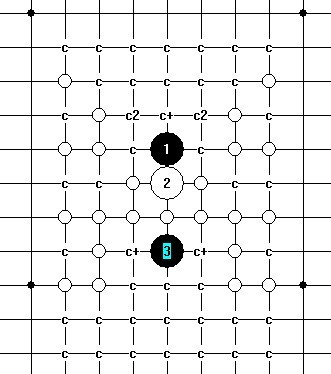
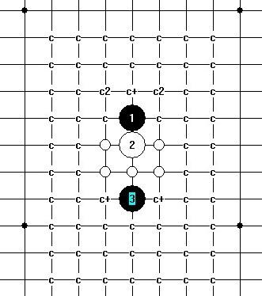

[大寒星] 大寒星进展
#1 [大寒星] 大寒星进展 作者：安娜制作所 发表时间：2011-3-3 8:10:38

近期进行强点研究,远端的4都没什么问题,欢迎提供意见和建议.
#2 Re:[大寒星] 大寒星进展 作者：屏蔽 发表时间：2011-3-3 12:24:02
你能举个例子你想得到类似什么样的建议吗？［ 掌棋宣传员 于 2011-3-4 1:32:45 时花20金币送鲜花一朵］
#3 Re:[大寒星] 大寒星进展 作者：左伟光 发表时间：2011-3-5 21:17:47
听说白稍优，未研究多少呢。#4 Re:[大寒星] 大寒星进展 作者：岑小鱼 发表时间：2011-3-5 22:07:52
白4习惯走2的旁边并起来
#5 Re:[大寒星] 大寒星进展 作者：茗弈蓝莲花 发表时间：2011-3-21 20:14:46
 强4很麻烦
强4很麻烦
#6 Re:Re:[大寒星] 大寒星进展 作者：茗弈总监 发表时间：2011-3-25 11:03:49
还有三个四,花影老师有奖呢.
#7 Re:[大寒星] 大寒星进展 作者：可怜可怜 发表时间：2011-3-25 19:43:00

#8 Re:[大寒星] 大寒星进展 作者：懒得八面玲珑 发表时间：2011-4-7 14:03:43
强4走哪呢
#9 Re:[大寒星] 大寒星进展 作者：安娜制作所 发表时间：2011-4-7 16:30:56
那剩下的就是强点哈!#10 Re:[大寒星] 大寒星进展 作者：茗弈蓝莲花 发表时间：2011-5-4 9:38:27
强四有什么进展吗?#11 Re:[大寒星] 大寒星进展 作者：安娜制作所 发表时间：2011-5-4 10:39:07
先做那个平四8,